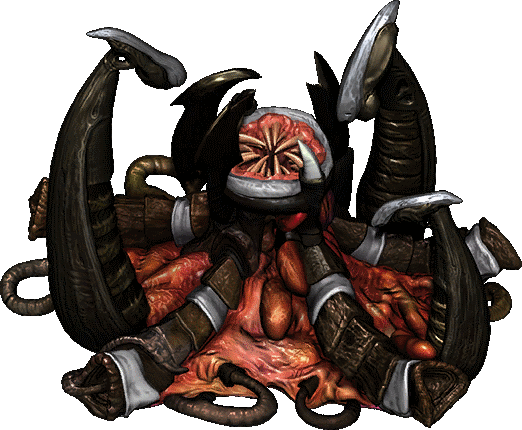

12드론 이후 앞마당 이후 바로 가스를 짓고 200미네랄을 모은 후 스포닝풀 건설
인구수 13까지 드론 이후 2~3저글링을 찍은 후 (2링을 찍으면 1개는 드론)
가스 100시 즉시 레어 인구수 16때 오버로드 생산 이후 드론or링 생산 (유동적으로 상황을 보며)
다음 가스 100시 바로 저글링 발업 미네랄이 300정도 남았을 시 (보통 인구수 21~23 사이) 3해처리 건설 (3땡이 혹은 본진 3햇)
레어 터지자 마자 스파이어 건설 뽑아놓은 저글링으로 상대방 유닛 동선 또는 상대방 빌드 체크
스파이어 건설 되기 체력 기준 300 남았을때 라바 소모 안하고 라바를 모으기
스파이어 터지자 마자 뮤탈을 뽑을 수 있도록 인구수를 미리 늘려놓는다
스파이어 터지자 마자 뮤탈 (이때 6~9뮤탈 정도 뽑을 수 있다 3해처리를 펼친 타이밍에 따라 달라짐)
이후 뮤탈 올인 혹은 3가스~4가스 확보 이후 하이브 운영